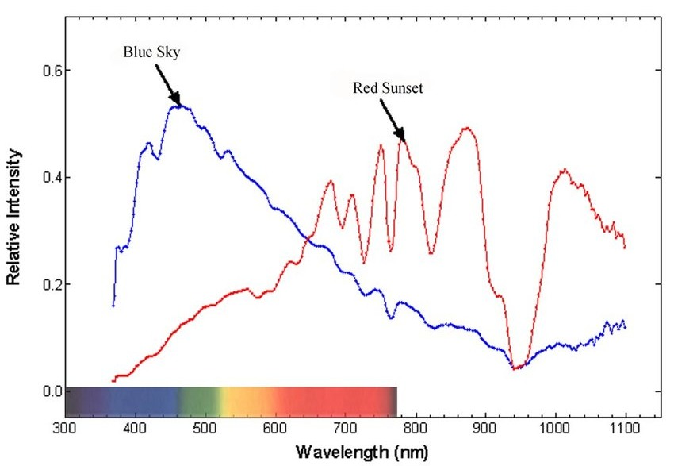

Standards are not created to help consumers; standards are for helping sell to consumers
White LED spectral power distributions are not like sunlight:
Surfaces with narrow band cyan reflectance appear much darker when illuminated by white LEDs than by sunlight.
Other intensely blue surfaces illuminated by white LEDs appear much brighter than by sunlight.
Those are examples of illuminant metamerism
and poor color rendering.
Incandescent spectral power distribution is also unlike daylight:
However, incandescent visible spectral power approximates that of setting sun:

Readers should have noticed that Blue Sky plot, immediately above,
is considerably less smooth than previous Daylight graph.
perhaps Daylight is merely some illustrative example?
likely measured using a broader filter with logarithmic scale.
Despite notorious difficulties distinguishing dark blue from black,
incandescent illumination obtains a CRI of 100. That may have promoted light bulb sales,
but demonstrates limitations of industry standards.
Halogen lamps, which are far better for sorting colors and approximating daylight, have lower CRI (around 95).
LED illumination rendered the fraud that is CRI increasingly untenable.
Researchers are fond of proposing new standards,
presenting data in favorable ways.
Like most industries, illumination manufacturers can be predicted to resist having products evaluated on merit,
with their lobbyists no doubt warning politicians against confusing voters with useful information.
Most standards organizations are substantially driven by industry representatives...
CCT vs CRI vs CQS vs CFI vs TLCI
CCT
Color temperature supposes that illumination source colors are on the one-dimensional Plankian locus,
which is nearly true for incandescent lamps. Correlated color temperature attempts to estimate where real 3-diminsional light source might be on that locus.
CCT is no predictor of ability to sort colors.
CRI
Color Rendering Index crudely estimates how nearly illumination matches incandescent, averaging errors. This page demonstrates how badly an illuminant which does moderately well on CRI's 8 colorants can fail. This page nicely illustrates inconsistency between CRI's Plankian locus and daylight:
CQS
Color Quality Scale
was a U.S. national standards body attempt to improve on CRI.
An analogy would be attempting to chrome plate a pig, instead of merely applying lipstick. This page IMO nicely compares CRI and CQS, with values for some flashlight LEDs.
Despite CQS merits, standards proposed by a country using pounds, yards, gallons and Fahrenheit are doomed.
CFI
Color Fidelity Index is derived from IES TM-30-18. This U.S. DoE page evaluates TM-30 with problematic illuminants, proposing metamerism predictors.
While not helping understand how CFI rates real LEDs, it does indirectly link an Online Spectral Calculator:
TELEVISION LIGHTING CONSISTENCY INDEX makes sense with video substantially replacing print.
However, researchers prefer to publish, and humans resist be sensible. This page reports that actual CRI, CQS, CFI and TLCI measurements generally correlate,
but emphasizes that TLCI was designed around how camera’s respond to light, which would be actually useful.
Getting anyone other than specialized light suppliers to actually use it seems highly unlikely...